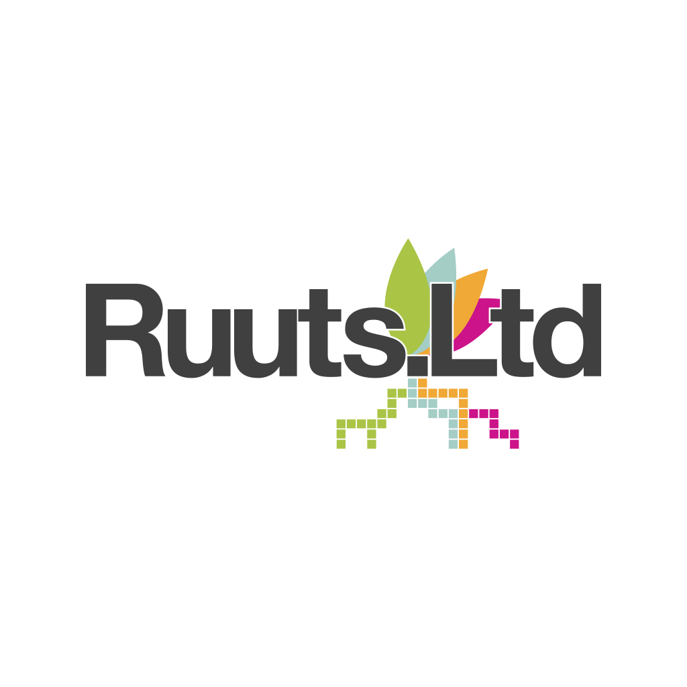
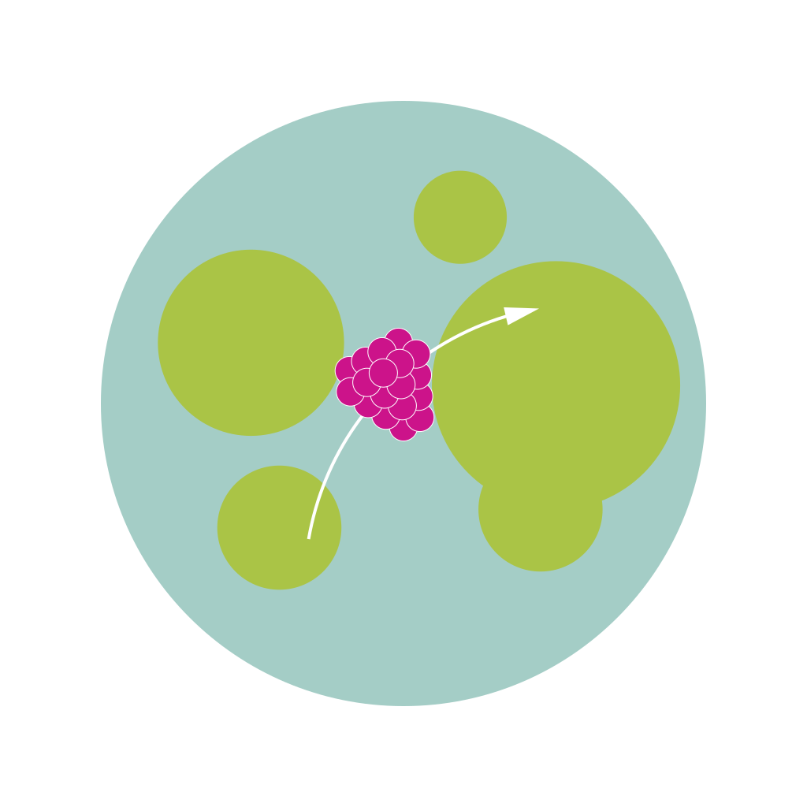
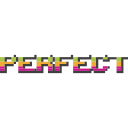
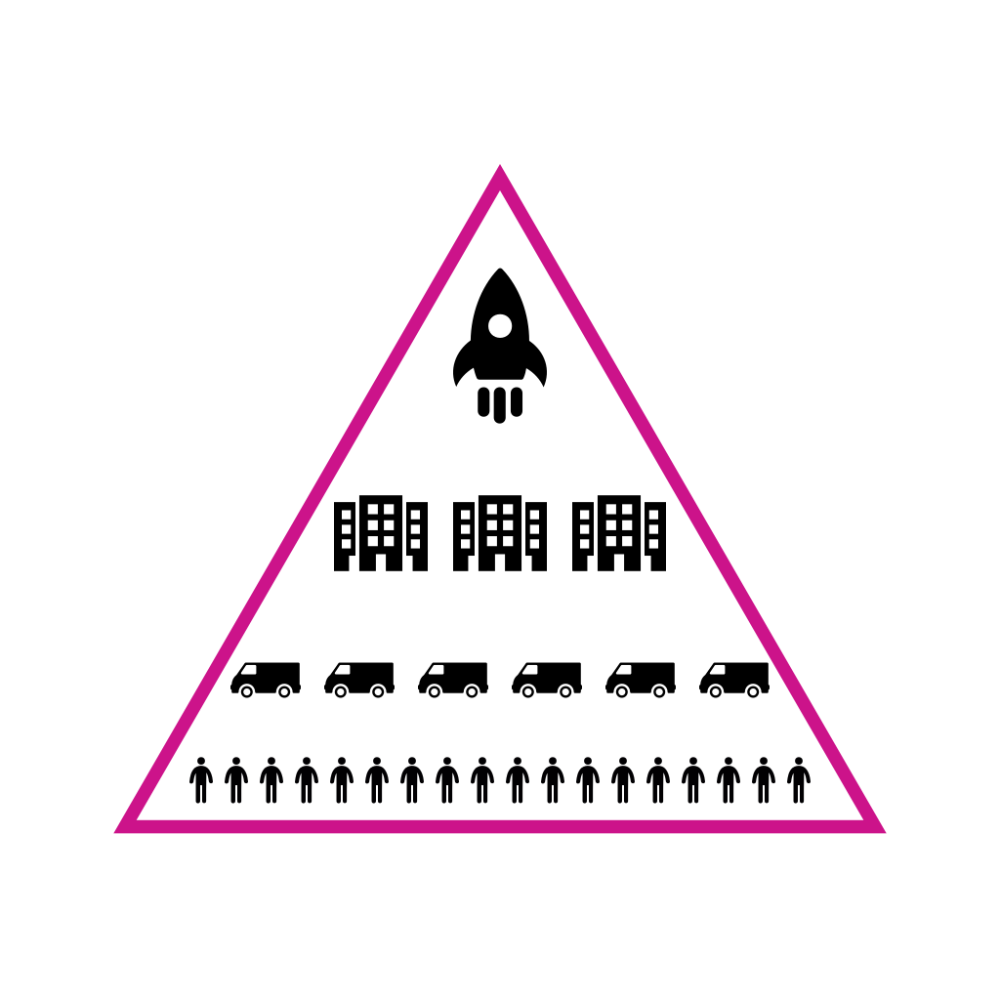
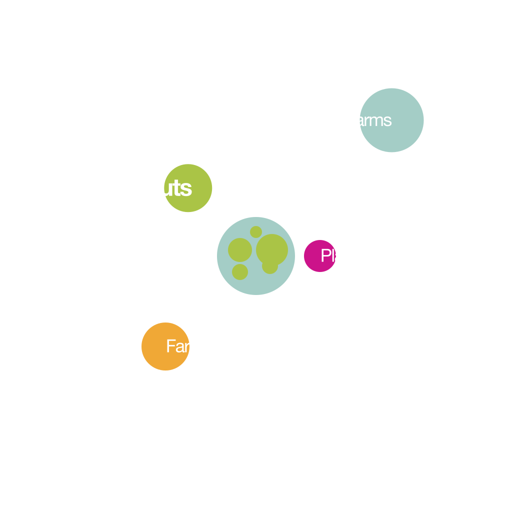
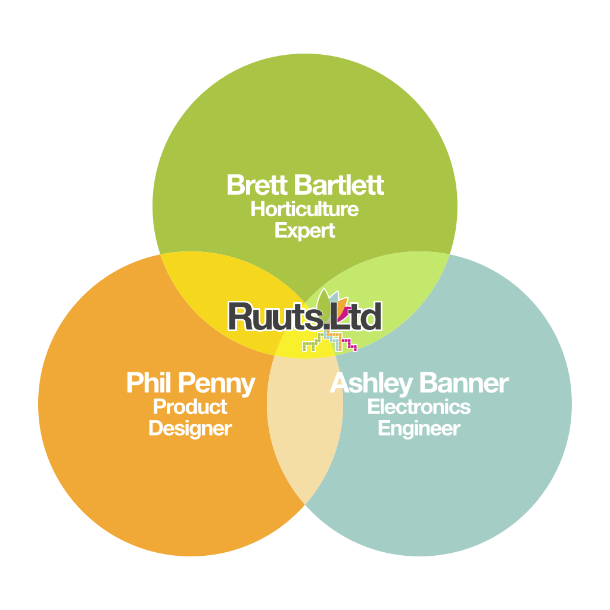
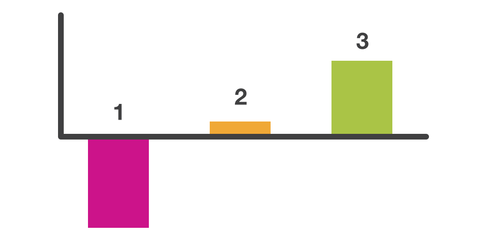
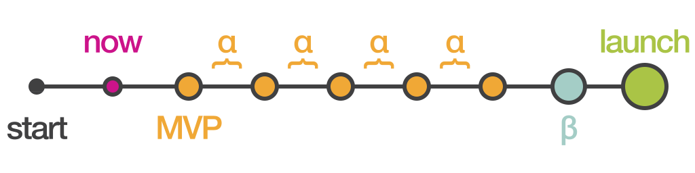

Intended audience
This pitch is aimed at securing flexible investment — such as the approaches taken by Draper Esprit et al in offering early stage investment with extended terms, but more likely angel investors such as those registered with the Angel Investment Network.
Ideally, industry specific investors such as Forward Fooding who can network us with key industrial players would be preferred. Investors such as Five Season Ventures would need to be approached at a much later stage of the business, with Anterra Capital perhaps being approachable a little sooner.
1__title

Phillip David Penny+447961 732 861
2__problem-opportunity
In Winter, we eat raspberries from Chile.

Today's technology has evolved to a point which enables us to get pretty much anything we want, whenever we want it. In the food industry we are now eating a wider variety of foods than ever before, with incredible accessibility. However, society is becoming more informed about the global issues this creates.
Let's examine a simple scenario; if we want to eat a raspberry in November, we choose to import it from halfway across the world, at massive cost to the environment, the quality of the fruit itself, and with little control over it's origins; we don't know it's history or how 'organic' it really is.
Take apples for instance, the fruit is picked many months before it is presented to consumers; by controlling the atmosphere in storage the fruit can be preserved for up to 10 months; the not-so obvious downside of this is the need to treat the apples (amongst many other foods such as broccoli, carrots, lettuce, etc) with a gaseous compound, 1-methylcyclopropene (1-MCP) - doesn't sound very organic does it?
Scientific studies have shown that after 3 months of storage, antioxidant activity in apples gradually drops off, and that food in storage loses it's flavour ... yet the average supermarket apple is 14 months old! So we are eating produce which in our minds is fresh, yet in reality has lost most of it's original nutrient content and flavour.
Why do we accept this? Because it is far easier to have a seemingly limitless supply of food any time of the year than it is to try to grow our own. Because we don't know any better; the apples we buy from Supermarket X are all we've ever known. Because we don't have the time to grow food, we don't have the space, the knowledge of seasons or plant care, we don't have the patience.
We provide multiple reasons we don't grow our own food, but here at Ruuts we don't believe that these hold true any longer. Food is one of the 3 key elements all humans need to survive, along with warmth and shelter, and it deserves more of our attention. We can do better, and we have done better.
3__value-proposition
Grow perfect food, anytime, anywhere,

AUTOMATICALLY.
We present the Ruuts Grow System; a compact, modular, fully automated system for controlling and managing all aspect of plant growth. Using the Ruuts growing system, we can grow perfect food, whenever we want, wherever we want, really fast, using trustworthy seeds, saving water, saving land, saving the planet, all automatically. We can grow enough food to feed our family, with virtually no time cost. We can teach our family how to grow food and care for plants using optional manual or semi-automatic recipes. We can create our own recipes and share them with the world. We can even compete to grow the biggest tomato, the brightest, the tastiest or the fastest.
Aeroponics is used to feed the plants and is the most advanced growing technique available. Plants are suspended in a growing medium in air - normally gauze or cotton, and the roots are misted with controlled droplets of feed to ensure they have optimum nutrition uptake, without the need for soil.
Aeroponics uses 95% less water than traditional farming methods, and 90% less land.
The clean, secure, enclosed environment provided by the system negates the need for any pesticides or fertilisers; pests and disease are no longer an issue.
By providing the plant with the exact conditions needed for growth we can produce perfect quality fruit every time, maximising the potential of the seeds.
All this allows us to grow food up to 30% faster using aeroponics; and, by combining multiple systems and using our advanced scheduler, you can effectively remove the wait for growth after the initial harvest.
By controlling the entire climate of the plant, we can render weather as a factor obsolete, meaning traditional seasons become a thing of the past and allow for true all year round growing.
The compact system enclosure will fit anywhere in your home - behind the sofa, under the stairs, in a kitchen cupboard, practically anywhere you can provide it with power. Growing food at home completely removes the need for global transportation because the food is grown in its final destination.
Know exactly what you are growing by choosing the seeds yourself, thus giving you 100% control over the food you are eating. Moving forward we will offer ancient and heirloom seeds from our store so you can grow guaranteed unmodified foods, opening up a wide and diverse range of new tastes to try.
Everything is monitored by the accompanying PlantIO application to provide constant, real-time feedback to the user about their plant and serve as a community for sharing growth recipes, providing feedback for further product development, and giving control to the user to grow their plant their own way using our semi-automatic and manual recipe settings.
4__underlying-magic
The Ruuts system provides complete control of plant growth. Watering and feeding, light exposure, and temperature are all delivered to exact specifications based on your starting seed. Using our 'recipes' we do all the hard work for you. There are just 3 simple steps to getting started with your Ruuts system:
1. Simply connect your Ruuts system with your account via wi-fi, select the recipe you desire; place your seeds into your system and the germination phase then begins automatically.
2. The PlantIO app will monitor the seeds as they develop into sproutlings, and when ready, PlantIO will instruct you to select the superior sproutling and remove the others.
3. The PlantIO app will now monitor complete growth of the plant and let you know when it is time to pick the final fruits.
The PlantIO app monitors all aspects of the plants' health and adjusts the system as required, only sending you notifications if emergency situation arise. Of course, users can check the status of their plant at any time using the real-time status screen.
This fully automated growing can be adjusted to give you back some control; we know a lot of people that already grow take pleasure from the pure act of growing, others want to learn more about it. We accommodate this by providing two extra kinds of recipes to live alongside the fully automatic variety.
'Semi-automatic' recipes work in the same way as standard fully automatic recipes, however they notify you when it's time to feed, water or give light to your plant rather than doing it automatically. You must then use the apps to control the grow system yourself, in real time.
Finally, we have 'manual' recipes which provide no instructions whatsoever; it is up to you to decide how and when to care for your plant. This can be set up ahead of time or managed on the fly, just as you would a normal plant.
All plant data is recorded so you can save any recipes which work particularly well and share them with the Ruuts community, this will help to evolve our recipes over time for growing food to specific requirements; the biggest tomato, the crunchiest lettuce, the best looking strawberries.
90% of the components of the Ruuts system can be 3D printed if replacements or additional modules are required - meaning the home user can expand at very little cost.
For the technology stack, a progressive web app was chosen to ensure maximum accessibility - users can check their plant status regardless of the device, so long as they have can access a web browser. Each Ruuts system comes with it's own Raspberry Pi Zero W allowing it to connect wirelessly to the internet, and Arduino controllers are used to turn the PlantIO signals into actions.
5__business-model

Phase 4: Space
↑
Phase 3: Industrial
↑
Phase 2: Small Business
↑
Phase 1: Consumer
The Ruuts business model is composed of 3 major squential phases which are sequential - consumer, business, and industrial. There is a 4th end goal phase which the company is always driving towards.
Ruuts will launch directly into the first phase which will focus on the consumer market. Initially, revenue will be generated through the sale of systems and equipment for occasional, home-based use, accompanied by the corresponding phase 1 of the PlantIO app. During this phase, everything will be open source in line with the values of the company; individuals will be free to use our code and create their own systems. The consumer will serve as a major source of promotion for the company during this phase and help Ruuts gain traction within the press and social media.
The controlling application will be free to use for the first 3 harvests, giving the user enough time to benefit from the technology and have it form a part of their lifestyle. After this period, a subscription model will be implemented, charging monthly operating costs if the user wishes to have the full version of the software; otherwise they will be limited in some way, either by functionality limits or advertisements, yet to be determined.
Continual investment will need to be made into promotion, online presence, and product development as issues are ironed out and consumer recommended enhancements are implemented. In addition to this, product development will need to be made into preparing for phase 2.
Having gained stability and popularity within the consumer market, we will shift a portion of our focus into business applications; investment will now concentrate on semi-bespoke installs for small businesses in return for promotion. Using our modular designs, this approach can also be adopted by consumers to set up their own larger systems. The app will be further developed to monitor multiple connected systems and help businesses create growing plans to maximise daily yields.
With exposure from small business applications will come interest from larger-scale industrial applications; supermarkets are an obvious candidate for bespoke installation of bolt-on 'Ruuts-Farms' on their premises. Investment during this phase will be into a large-scale demonstration system providing free produce for charity and food banks, doubling as a live exhibition for potential investors. The app will be developed in the areas of security and scalability, with careful assessment of the back-end services to manage big plant data.
The fourth and final phase of the business will focus on extreme environments such as polar, desert, and space, with the company heavily investing into development in these areas to become a world leader in this market segment. The development of a cost-effective, self-sustaining container farm that can be deployed in areas of need will be the first focus.
6__go-to-market-plan
β Beta Launch.
Big Green Vegetable Machine
Recipe World
Millenial Mark.
Parent with young children.
first-time | passive | prosumer | home
Youth Yasmin.
Generation Z Instagram fanatic.
casual | advocate | enthusiast | hobby
Environmentalist Ed.
Devout vegan preacher.
power | advocate | prosumer | home
Chef Cheryl.
Runs a small business.
power | active | professional | business
The company will remain agile, specifically within the first 12 months of product launches in order to fine-tune the product and ensure a successful press launch. A beta-release of the system will be offered over a period of 90 days (roughly equating to 3 consecutive harvests) to 100 people serving the 4 main market segments of phase 1, with a free base system provided in return for regular feedback. A/B testing of fully automatic, semi-automatic and manual recipe settings will need to be conducted.
Following from this, a staggered product launch will provide the opportunity for users to buy in at a very low level, then upgrade components as the system forms part of their daily life and habits. The modular design allows for limitless expansion and upgrading, whilst the sharing of recipes will build a social community and a huge knowledgebase.
A promotional campaign will run during the first phase as Ruuts provides demonstrations and education to schools, exhibition events and pairing up with local businesses to provide instant ingredients, likely to be served from a specially modified demonstration vehicle allowing for cross-country promotions.
### MARKET SEGMENTS :
#### Millenials
Millenial Mark is a highly aware individual; happily married with a very young family and a busy schedule. Mark is aware of the environment, aware of what we eat, and aware of our impression on others. Mark see the popularity behind lifestyle choices and provides an opportunity for marketing purposes for our product. Defined as a first-time passive user of the system, Mark will be looking for results and will use the system in fully automatic mode to fit in with his busy schedules. Should he see success with the system he is likely to form part of the subscription base, he has disposable income which he is happy to use to improve the quality of live for his family.
#### Generation Z
Youth Yasmin, part of "Generation Z" is in her early twenties and is an avid gym goer and clean eater. She loves to travel, loves animals and is an active blogger. Yasmin provides a huge opportunity for free marketing - the Instagram generation are all too eager to show off their exploits to their followers, particularly when it comes to health and their bodies. What can be healthier than the purest, sustainable food possible? Unlikely to create revenue through the subscription model, Yasmin will require a workable free setting to continue using the product. We expect Yasmin to want increased product engagement so will be using the semi-automatic recipes and documenting her every interaction via social media. Strong app branding is important for all the screen time Yasmin will generate. She will appreciate the fine UI details such as subtle animations, and a fast, smooth experience.
#### Environmentalists
Environmentalist Ed is highly aware of the damage the human race is doing to the planet, and seeks to promote a better way of living in all that he does. He rides a bike everywhere, and people know it. He recycles everything in his home, and people know it. One of our power users during the first phase, Ed will be an advocate for the system, preaching to his peers about the massive benefits it brings to society and the health of the planet. Ed will provide plenty of product feedback, and use his system religiously, yet will push for freedom of use and likely not contribute much in the way of direct revenue. Ed's value is in his evangelic promotion of the idea and rigorous testing.
#### Small Business Owners
Chef Cheryl is a small food business owner, serving vegan food from her converted van. Though forming the bulk of phase 2, it is important to connect with Cheryl during the first product phase, she needs to believe that this is a product that can take her business to the next level. It needs to provide economic benefit, as well as seamless operation. Cheryl will likely upgrade to a paid installation to suit her needs, and demand A.I. technology from her recipes to ensure she is growing the best possible food for her business needs.
7__competitive-analysis

There is a huge gap in the market for our product; our competitors either cannot match our technology, or our pricing models, or our scale.
Small hobbyist programs such as PlantFriends are free, but are not suited for substantial, regular food growth and require significant user investment to set them up and get them working.
FarmBot, our nearest competitor, have an attractive and unique application, however they offer an entry level option of over £2000, yet still requires outdoor growing space and uses dated farming methods.
AeroFarms are a huge player and serve the industry with prices starting from tens of thousands of dollars. They use advanced technology and are really focussing on the top end of the market.
The Sahara Forest Project is at the very top end of the industry, setting standards in growing in extreme conditions and are a serious competitor for phase 4 of our business model only.
There is an opportunity for low cost, low management convenient home growing using advanced techniques. All of the systems around the pricing model for our phase 1 users are vastly overpriced for what they offer; for example, the £99.50 KRYDDA/VÄXER from IKEA is simply a two tier stand with slots to grow 16 small plants, or approximately 200 lettuces from the supermarket. The Conran Shop are selling the "Smart Garden 9" which boasts NASA technology in the form of smart soil, provides slots for 9 small plants at the whopping cost of £199, or 400 cucumbers.
The closest competitor with an app is the Flower Care Smart Monitor, which is nicely designed and professionally presented with strong branding, including a well thought out UX, however it provides no automation and utilises none of the agricultural advancements the Ruuts system is built around, focuses on flowers and single use systems.
The competitor analysis has shown that the Ruuts system provides multiple USP's and will target an underserved segment of the market.
8__management-team

Ruuts is composed of myself, Ashley Banner, and Brett Bartlett. We have successfully worked together on a separate startup - Carbon Candy - producing bespoke carbon fibre and more recently 3D printed components for various industries, focusing on the drone industry of late, with a multi-page publication in Drone Magazine. Carbon Candy was designed as a stepping stone into Ruuts, enabling us to acquire the skills necessary build our own system using advanced materials, as well as learning the skills required to work together and form a successful business.
We combine the perfect mix of an experienced product designer in myself, with over 15 years of professional design experience; a horticulture expert in Brett Bartlett with a vast knowledge of plant growth characteristics and an aeroponic research programme behind him, and electronics engineer Ashley Banner who specialises in designing electronic systems with off-the-shelf components to create bespoke products, essentially taking Ruuts designs and turning them into a feasible, realistic tangible product. Our team are skilled in all the necessary areas to produce a successful product in this industry.
9__financial-projections-and-key-metrics

Invest
Nozzle investment & product development
→
Re-Invest
Small scale sales offset by marketing
→
Profit
ROI with complete system
Though there is plenty of research still to be done on our pricing model and component selection, we have still generated a basic 3 year plan to focus our efforts.
During the first year, initial product development will offset the revenue from early sales and subscriptions as we respond to user feedback and solidify our offering. Investment will also go into maintaining an active online brand that is engaged with users and responds to the social environment. Product development will be focussed on optimising the application with its current feature-set, and developing the system in preparation for small to medium business installs.
During the second year, sales in the business segment will again be offset by further product development and marketing of the business, any profits being re-invested into the company to build a fully working bespoke demonstration system.
We expect to provide a slight return on investment by the third year with the launch of our complete system which will truly cater for all market segments and allow us to approach larger companies for bespoke installs and custom management solutions.
10__current-status-accomplishments-to-date-timeline-and-use-of-funds

We are currently developing the minimum viable product; whilst I design and develop the PlantIO application, Ashley is sourcing the components required to build the initial system to for scenario testing, whilst Brett is conducting detailed research into plant growth to create the first of our recipes.
We expect the MVP to be ready in 3 months time, for our very first internal alpha testing which itself will run for a 3 month period. Following this, we will commit a further 6 months to product development and finalise the physical design and initial consumer model. We will then repeat our 3 month alpha test, and follow it up with a second 3 month period of improvements. This will then lead into the 3 month public beta test which, if successful, will allow for an initial product launch during the Autumn of 2020 in 21 months time. It is important for us to remain agile as a company, and we will be using the length of harvests (around 21-30 days) to line up our sprints.
The Ruuts Grow System is at an extremely early stage of development, and requires considerable time dedication to product development. The physical components must undergo safety checks along with long-term testing, and the complete financial side of the product is yet to be calculated. Should the system be deemed to expensive for phase 1, we may have to begin our product in phase 2.
There is also the question of maintenance; as with any machine with moving parts, users will need to perform basic periodic checks on their systems. This maintenance procedure will be designed into the system, perhaps using sensors to check that the user has inspected the required components and cleaned where necessary.
References
Suszkiw, J. Keeping Apples Crunchy and Flavorful After Storage, AgResearchMagazine.
Lindstrom, M (2011). Brandwashed: Tricks Companies Use to Manupulate Our Minds and Persuade Us to Buy. Crown Business, United States.
Tsao, R. "Extraction, Separation, Detection, and Antioxidant Activity of Apple Polyphenols" in Antioxidant Measurement and Applications, Vol.956, American Chemical Society, (2007), ACSPublications.
Zhang, B et al. Chilling-induced tomato flavor loss is associated with altered volatile synthesis and transient changes in DNA methylation, Proceedings of the National Academy of Sciences. Vol. 113 no. 44, Nov 2016.
Love, D et al. Energy and water use of a small-scale raft aquaponics system in Baltimore, Maryland, United States. Aquacultural Engineering, vol. 68 pp. 19-27, September 2015.
Hancock, R. Water and Energy Conservation Grow System: Aquaponics and Aeroponics with a Cycle Timer. Electrical Engineering, California Polytechnic State University, August 2012.
NASA, "Progressive Plant Growing Has Business Blooming". Spinoff 2006, pp.64.
Chow, D. Plant Friends MKII. Retrieved August 23, 2018: www.dicksonchow.com/plant-friends-mkii
FarmBot. Open-Source CNC Farming. Retrieved August 23, 2018: www.farm.bot>
Aerofarms. Aerofarms is on a mission to change agriculture. Retrieved August 23, 2018: www.aerofarms.com/
Sahara Forest Project. Retrieved August 23, 2018: www.saharaforestproject.com
Flower Care. Retrieved August 23, 2018: www.huahuacaocao.com/product
IKEA, KRYDDA/VÄXER. Retrieved August 23, 2018: www.ikea.com/gb/en/products/indoor-gardening/indoor-growing-cultivators/krydda-v%C3%A4xer-grow-kit-w-16-pots-2-tiers-spr-79158686/
Flower Care. Retrieved August 23, 2018: www.conranshop.co.uk/smart-garden-9-white.html
Urban Garden Magazine, "The Science of Aeroponics". August 2007, Issue 003.
Drone Magazine, "Carbon Dating". Issue 19, pp. 70-73.
Carbon Candy. Retrieved August 23, 2018: www.carboncandy.co.uk